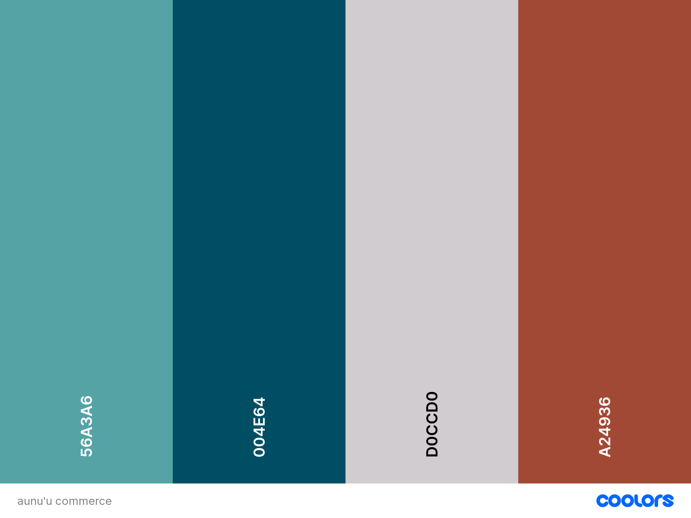

Site Name
Aunu'u Chamber of Commerce
Site Purpose
The Aunu'u Chamber of Commerce aims to bring together locally owned businesses to promote and advocate their interests. In addition, through networking and collaborating, business environments can be improved and communities are strengthened.
Scenarios
What events are happening in the community?
Where can I find contact information for local businesses?
What benefits are there for joining the chamber of commerce and how do I join?
Color Schema

My primary color for my design will be the Midnight green (#004e64) which will be used in the header box as well as throughout the page in various boxes. I will then use the Verdigris (#56a3a6) as a secondary color for decorative elements and the Chestnut (#A24936) as a contrasting color to highlight things or boxes that I want to pop out. My background color is French gray (#D0CCD0), font color is black except for text within the dark blue to which I will change the font to match the background.
Typography
Marcellus
The Marcellus font is a serif font that will be used for my h1, h2 and h3 headings.
Fira Sans
The Fira Sans font is a sans-serif that I think will contrast nicely with the Marcellus font used in the headings and will be used mainly for body text and for the footer.
Wireframe
Mobile

Desktop